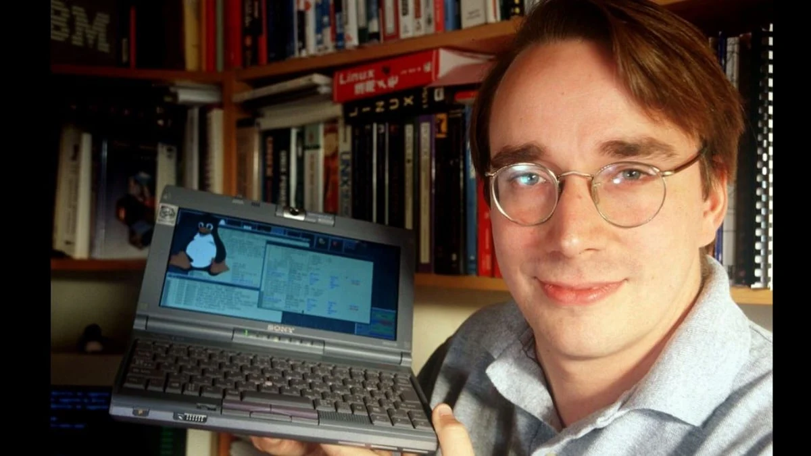

Linus Torvalds

Breathing New Life into Old Machines
The father of the Linux kernel, Linus Torvalds has always been a massive proponent of accessible, open-source software. Following that principle, Linux has never been easier to install and maintain, and the lightweight operating system can seem to resurrect older computers.
All about Linus!Why is That?
Linux does not use as many resources on your machine as Windows, or MacOs for that matter. Freeing up all of this extra computational power can let your computer run faster. It's even environmentally friendly! Changing operating systems would give more use to an old laptop that would be in a landfill. Such a waste! Even a potato-tier machine could host a website, home server, or many other projects.
